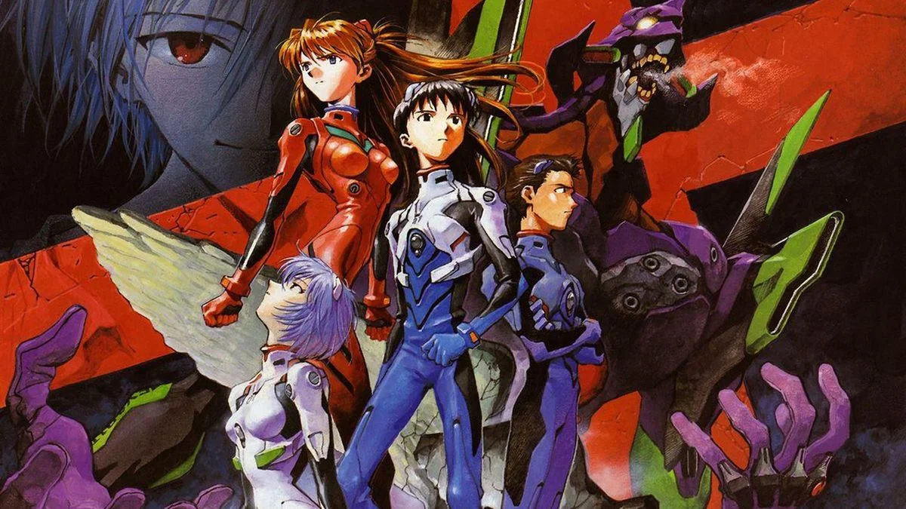

Sinopsis
"Neon Genesis Evangelion" es un anime de mechas que sigue a Shinji Ikari, un adolescente reclutado para pilotar un robot gigante contra misteriosas criaturas llamadas Ángeles. La serie explora temas psicológicos y existenciales mientras los pilotos luchan para proteger la humanidad en un mundo apocalíptico.

¿Donde verlo?
Puedes ver Evangelion en Español en - Netflix
Cantidad de capitulos
26 - Finalizado